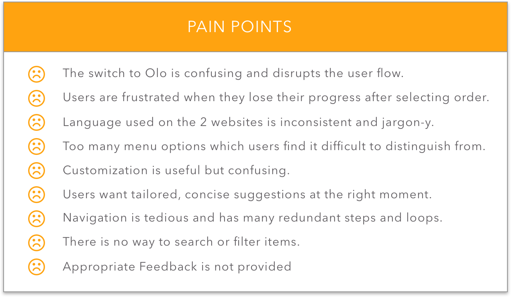
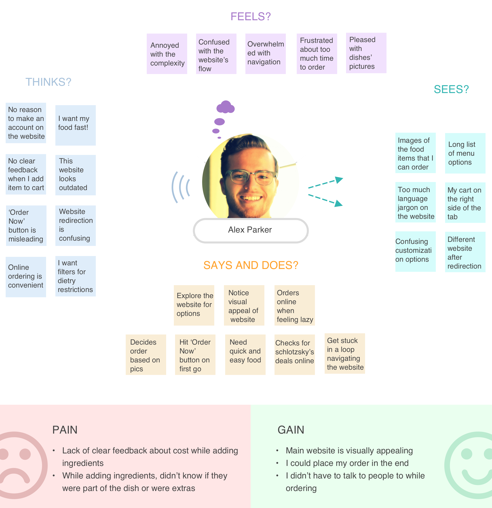
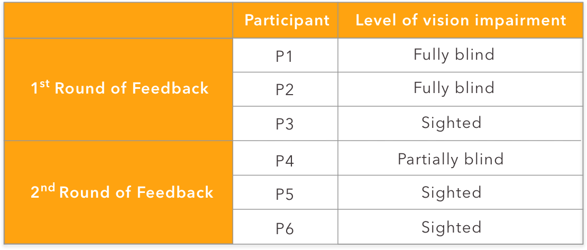
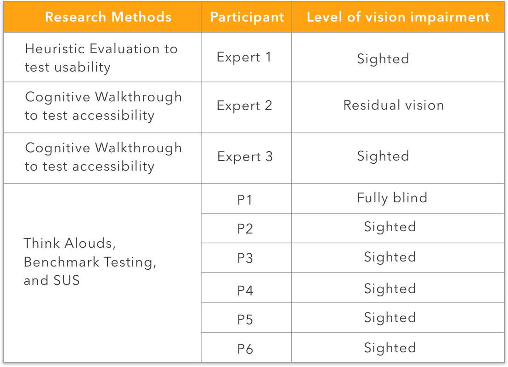
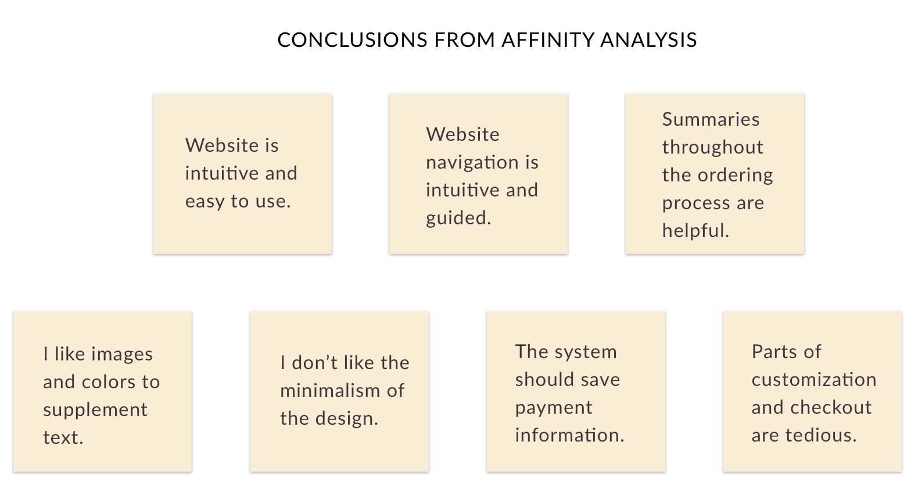

- < Work
- Accessible Ordering
- Overview
- Objective
- Target Users
- Process
- My Role
- RESEARCH
- Task Analysis
- Cognitive Walkthrough
- Think Alouds
- Affinity Analysis
- Tree Testing
- Research Findings
- IDEATION
- Persona
- Empathy Map
- Customer User Journey
- Brainstorming
- DESIGN
- Design Alternatives
- USER FEEDABCK
- First Round of Feddback
- Second Round of Feedback
- PROTOTYPING
- Website Sketches
- Website Prototype
- EVALUATION
- Heuristic Evaluation
- Cognitive Walkthrough
- Think Alouds and Interviews
- Usability Benchmark Testing
- System Usability Scale
- Affinity Analysis
- Design Recommendations
Accessible Online Ordering

Overview
Schlotzsky’s is a sandwich franchise founded in Austin, Texas. Schlotzsky’s is taking a proactive approach to implement accessible design throughout the company’s websites to grow their user base and comply with the Americans with Disabilities Act Title III.
Objective
Redesign Schlotzsky’s online ordering platform to make it usable and accessible according to WCAG 2.1 Accessibility Guidelines.
Target Users
Our target users are people interested in ordering food for pickup from Schlotzsky's online website
Process

My Role
1.In the research phase, I designed the procedure and questions for the think aloud sessions, conducted competitive analysis,
and finalized the visual layout of task analysis. The team conducted affinity analysis and outlined major pain points together.
2.During the ideation phase, I made empathy maps, revised and finalized the customer user journey.
I actively contributed during brainstorming and sketching design ideas.
During design iterations, I created low-fidelity prototypes of 2 design alternatives with another team member.
During the feedback rounds, I conducted 3 feedback sessions, and made the Sketch prototype of the website independently.
3.During the evaluation phase, I conducted 2 expert reviews, and 2 usability tests.
The team analyzed data and arrived at research findings together.
Duration
4 Months
Aug 2018 - Dec 2018
Team
Team of four
Tools
Pen & Paper | Sketch | React.js
RESEARCH
In order to identify pain points that the website’s users face, we conducted 4 research methods - Task Analysis, Cognitive Walkthrough, Interviews and Think Alouds, and Tree Testing.
TASK ANALYSIS
We conducted task analysis to understand users’ goals and possible task flows while ordering on the Schlotzsky’s website. This allowed us to spot navigational issues and understand the process at a granular level.

COGNITIVE WALKTHROUGH
We conducted cognitive walkthrough to understand the customer’s expectations and information needs on the website. We formulated online ordering tasks and answered the following questions for each step in the process:

THINK ALOUDS
We conducted think aloud sessions with 13 participants representative of our target user group. These sessions helped us to understand the website’s strengths and weaknesses from the perspective of a consumer.

AFFINITY MAPPING
After conducting think aloud sessions, we performed affinity mapping to obtain a set of broad problems we should cater to.


TREE TESTING
To collect quantitative data about the website’s information architecture, we conducted Tree Testing with 68 participants. Tree Testing helped us to understand what portion of users could find what they were looking for, and if the navigation labelling was appropriate.
Task: You live in the city of Atlanta, Georgia. You have to order a Fresh Veggie Sandwich from a restaurant called Schlotzsky's.

RESEARCH FINDINGS
After synthesizing our data from all the conducted research methods, we identified the following common pain points.
IDEATION
PERSONA
Following is a persona that represents a typical user.

Empathy Map
I made an empathy map to help us better understand users' needs.
Customer User Journey
We made a user journey to empathize with our users while making design decisions.

Brainstorming
We brainstormed possible design solutions to the online ordering platform, making sure that we didn’t restrict ourselves to just a website.
DESIGN
We narrowed down to 3 design alternatives based on their feasibility and usability.
Design Alternatives

VOICE ASSISTANT
Converse with a smart voice interface to order food online. We shortlisted this idea as it allows natural interactions and aids accessibility.
CHATBOT
Chatbot that uses text as a medium of communication. Chatbots have great potential of being accessible interfaces with screenreaders.
WEBSITE
We designed and developed a website according to the web accessibility standards. A streamlined website is a familiar and usable alternative.
USER FEEDBACK
We conducted 2 rounds of feedback with 6 participants to evaluate our design alternatives. We used the Wizard of Oz method to simulate the chatbot and voice interface. We simulated the chatbot on Facebook messenger. The website's low fidelity prototype was developed in React.js using accessibility guidelines.
All users preferred, from most to least:
- Website
- Chatbot
- Voice interface
First Round of Feedback
- We found that users generally underestimate the capabilities of chatbots and voice interfaces because of their previous experiences and are therefore hesitant to engage with them.
- Participants felt that hearing the entire menu or placing a large order was too much cognitive load while using the voice interface.
- Participants also stated that they would prefer a blend between the chatbot and website.
Second Round of Feedback

- For this round,we made improvements to our design alternatives and combined the website and chatbot.
- Participants felt that the chatbot and the website together were redundant; they would rather interact only with the website.
- We decided to go forward with the website and added the following design improvements based on the data gathered.

PROTOTYPING
Website Sketches

Home page
Customization
Category lists
Website Prototype
We designed a medium fidelity prototype in Sketch. Snapshots of main screens are shown below. Interact with the prototype here. The implemented website URL can be found here.
EVALUATION
We tested our prototype with 9 people - 3 experts and 6 participants.
Heuristic Evaluation
Our goal with heuristic evaluation is to ensure that our design meets holistic usability standards. After providing our expert with our heuristics, the expert walked through our prototype by ordering a sandwich. Our expert had positive things to say about the prototype. Following are the major quotes.
- Checkout:
- This is taken care of when a user signs in because their payment detail will be saved.
- Homepage:
- Language is clear
- Good visuals and aesthetics
- Straightforward to get to the “sandwich” menu
- Sandwich page:
- Pretty well laid out
- Pictures look good
- Overall:
- Flexibility is good because you can get to sandwiches by searching or clicking on the pics.
After the heuristic evaluation, we incorporated the following changes to our prototype based on the expert’s feedback, and the team’s discussion.
- Added feature for ‘Website Feedback’ at the end of the home page
- Added a comment/note to chef feature on the Customization page
- Displayed an empty cart from the initial phase of the ordering process for consistency. The cart then fills up as the user adds items.
- Changed the filter bar’s visuals for aesthetic and usability reasons
- We removed the Promo picture from the home page to avoid distraction
- Added Favorites option to save the item for later.
- A drop down menu for selecting the size of extra ingredients.
Screens of the improved Sketch prototype with the above mentioned changes can be found here.
Cognitive Walkthrough
Our goal for the cognitive walkthrough was to understand the user’s expectations and information needs while ordering online from Schlotzsky’s specifically in regards to accessibility. Our accessibility experts walked through the website with a screen reader.
We found that our website met overarching accessibility goals in that it is easily navigable by a variety of screen readers (it’s operable, robust) and that it is predictable and understandable in terms of language and overall structure (understandable and perceivable). We also received following feedback from the accessibility experts:
- The button to select a ZIP code is not read by screen readers, so users will try to click on the location name as if it were a link.
- On the sandwich landing page, screen readers do not read the “Customize” button.
- Tab order needs to be restructured on the customization page.
- The cart summary at the bottom of the customization page is not visible to the screen reader when a user is tabbing through.
- There is no feedback for the user once they have added their sandwich to the cart.
- The prompt to enter credit card details on the checkout page is too vague because it does not tell the user visually or through a screen reader in which format they should enter the expiration month and year.
Think Alouds and Interviews
Think Alouds was chosen as way to gather rich qualitative data relating to understanding the usability and accessibility of the prototype. The task allotted to participants was to order a Sandwich for pickup for their next meal. After the Think Alouds, we asked participants about the easy/difficult parts of the process, visuals, navigation, and language of the website. We took detailed notes on all interviews and then converted participants data into sticky notes in order to perform affinity mapping.
Usability Benchmark Testing
Our goal for benchmark testing was to compare how accessible our design is compared to one of Schlotzsky’s competitors, Hopdoddy. The task given to participants was the same as for Think Alouds- order an item for lunch online. We also asked them the same post-test questions as we did for the think-aloud earlier in the evaluation session. This gave us concrete benchmarks, such as level of difficulty, language, and visual aesthetics, with which to compare our design and Hopdoddy’s website. The notes obtained from this evaluation session were used for affinity analysis.
System Usability Scale
Our goal for using SUS was to obtain a baseline score of the usability of our prototype. The average SUS score was 90.83. Participants found the website to be very usable.
Affinity Analysis
We conducted Affinity Analysis on the data obtained from our evaluation sessions.
Design Recommendations
We gathered Design Recommendations after analysing our data from all evaluation sessions.